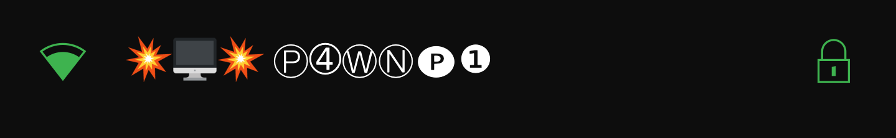
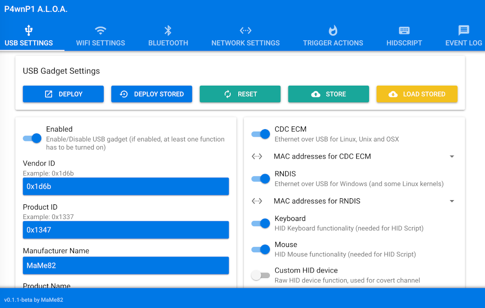
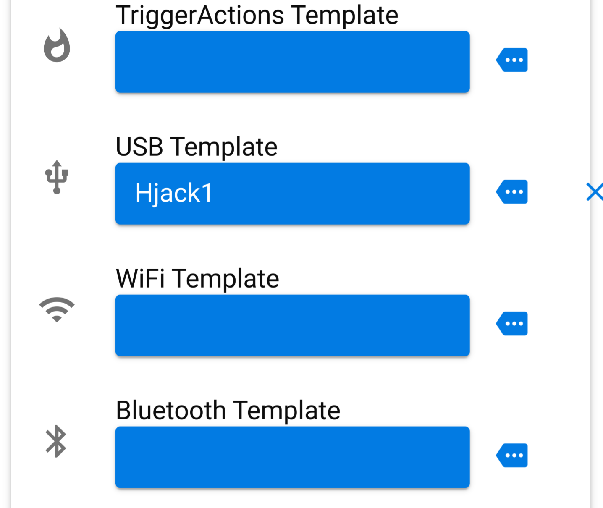
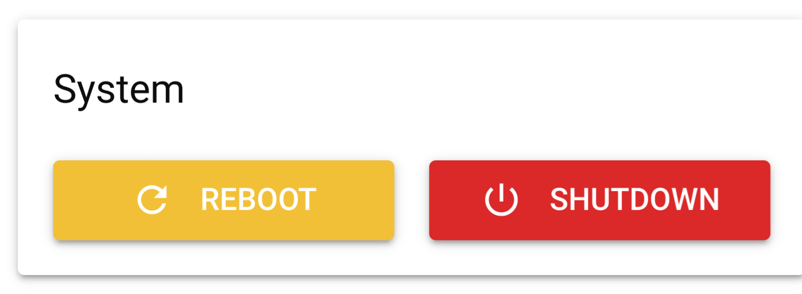

( Achtung!!! Dieser Blogbeitrag dient ausschließlich zu informativen Zwecken. Der Autor übernimmt keine Verantwortung für illegale Aktivitäten, die Leser möglicherweise mit dem bereitgestellten Material
durchführen.)
Zu Weihnachten 2023 erhielt ich ein faszinierendes Geschenk: einen Raspberry Pi Zero WH. Bereits im Vorfeld hatte ich mir Gedanken darüber gemacht, wie ich dieses kleine Wunderwerk nutzen könnte. Die Idee, eine Retro-Konsole zu erschaffen, war schnell geboren. Batocera erschien mir jedoch zu träge, also fiel meine Wahl auf P4wnP1 – ein kleines Hacker-Gadget, das auf jedem Betriebssystem seinen Dienst verrichtet.
Nachdem ich die neueste .img.gz-Datei heruntergeladen hatte, spielte ich sie mithilfe des Pi-Imagers auf die Micro SD-Karte. Nach dem Anschluss an einen Windows-Laptop über den USB-Micro-USB-Anschluss verband ich mich per P4wnP1-WLAN

mit meinem Handy, wobei das Passwort MaMe82-P4wnP1 ist, und öffnete http://172.24.0.1:8000. Plötzlich befand ich mich auf der Startseite,

voller Möglichkeiten und Geheimnisse.
Ich entschied mich, CDC ECM und RNDIS auszuschalten, da ich sie nicht benötigte. Ein Blick ins Terminal und ein paar geschickte Befehle später erstellte ich einen USB-Stick. Der Befehl lautete: "./genimg -l Hjacks-USB" (maximal 11 Buchstaben für den Stick-Namen), "-s 4000" (maximal 4 GB für die Größe) und "-o 4gb" (Dateiname zur Wiedererkennung).
Nach kurzer Wartezeit konnte ich das Terminal schließen und zum P4wnP1 zurückkehren. Mass Storage aktivieren, 4 GB auswählen und oben nur noch sichern – fertig. In den letzten Einstellungen

wählte ich mein Template für Bluetooth aus, sicherte es und änderte die Startup-Einstellungen entsprechend. Ein Klick auf "Reboot"

und schon lief alles wie am Schnürchen.
Aber wie funktioniert das eigentlich? P4wnP1 geht zum Laptop und sagt: "Hey Bro, ich bin eine Tastatur und eine Maus." Der Laptop antwortet prompt: "Alles klar, du kannst jetzt alles eingeben und die Maus nach Belieben bewegen." Und so kann ich die Tastatur und Maus mithilfe von HID-Skripten steuern.
Die Erstellung solcher Skripte ist erstaunlich einfach. Man muss nur festlegen, was die Tastatur eingeben oder schreiben soll. Auf diese Weise kann man spielend leicht den Windows Defender ausschalten und dann eine Reverse Shell mit Tools wie Koadic zum Angreifer aufbauen. Über diese Shell erhält der Angreifer vollen Zugriff auf den PC. Doch Vorsicht ist geboten – solche Fähigkeiten sollten stets verantwortungsbewusst und ethisch korrekt eingesetzt werden.